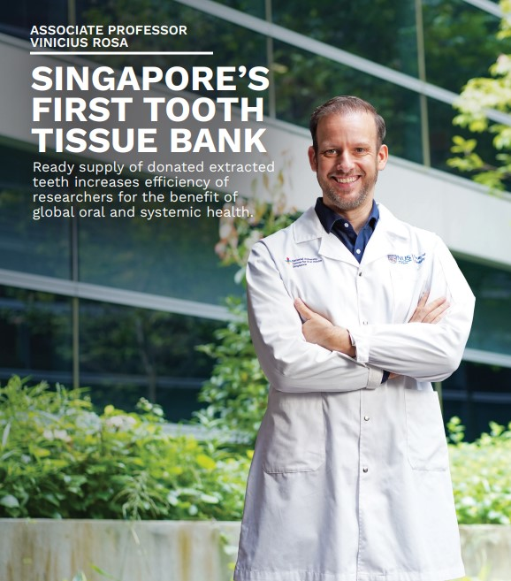

Channel NewsAsia interviews A/P Rosa on Singapore's Tooth Tissue Bank
Singapore’s leading English-language broadcaster speaks with A/P Rosa about the NUCOHS Tooth Tissue Bank and the science of dental stem cells.

Channel NewsAsia, Singapore’s primary English-language broadcaster, featured A/P Vinicius Rosa in a segment on the NUCOHS Tooth Tissue Bank at the National University Centre for Oral Health Singapore. The interview explained to a broad audience how extracted teeth — a material most people would regard as medical waste — can serve as a valuable source of biological tissue for regenerative research.
A/P Rosa explained the scientific rationale for the bank: dental pulp tissue contains a population of mesenchymal stem cells with self-renewal capacity and the potential to differentiate into multiple cell types. These cells, harvested from teeth that would otherwise be discarded, can be characterised, banked, and ultimately used to develop cell-based or scaffold-based therapies for dental pulp, bone, and periodontal regeneration. The interview communicated this vision to a lay audience without sacrificing scientific accuracy.
Every extracted tooth is a potential contribution to the future of regenerative dentistry.
Public science communication is an increasingly important dimension of research leadership in Singapore. A/P Rosa’s engagement with mainstream media — from broadcast television to print and digital outlets — reflects NUS Dentistry’s commitment to translating scientific work into public understanding. The CNA segment reached an audience extending well beyond the academic research community, helping to raise awareness of how dental research connects to Singapore’s broader ambitions in biomedical science and healthcare innovation.